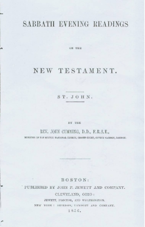
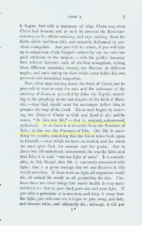

Ellen G. White: Great Adventist plagiarist
Question?What do you call a person that takes the words and thoughts of other authors without giving credit and then claims the words come from God?
Answer.A plagiarist, a literary thief and a liar.
Merriam-Webster's 11th Collegiate Dictionary
Main entry: pla-gia-rize; Etymology: plagiary; Date:1716
transitive verb: to steal and pass off (the ideas or words of another) as one's own : use (another's production) without crediting the source
intransitive verb: to commit literary theft : present as new and original an idea or product derived from an existing source
EGW plagiarized the Rev. John Cummings who wrote Sabbath Evening Readings in 1856 into her book, The Desire of Ages, p. 530 in 1898.
"In him [Christ] was life,"— that is, original, unborrowed, underived."(see above)
"In Christ is life, original, unborrowed, underived"(The Desire of Ages, p. 530, 1898)
Walter Martin/William Johnsson debate
In the 1985 debate on the John Ankerberg show between Dr. Walter Martin and SDA Dr. William Johnsson; one of the points of discussion was EGW's plagiarism. Johnsson used the above EGW quote EGW plagiarized from Rev. Cummings without even being aware that it had been plagiarized. See video debate here.
New and Important
- Ellen G. White and the Chicago Buildings Vision Fiascoby Kerry B. Wynne: Ellen White's Chicago Buildings Vision was her most spectacular prophetic blunder. [PDF]
- Doctors Bacchiocchi, MacCarty, and DuPreez Wreak Havoc With the Sabbath and Ellen Whiteby Kerry Wynne, William Hohmann, Robert K. Sanders: This book is for those who wish to study the anti-Sabbatarian content of the New Testament as a supplement to our other three books. [PDF]
Other Important Online Materials
- A Critic Answers Uncomfortable Questions by William Hohmann: New August 1, 2012—Response to the challenge on The Adventist Defense League Blog Site [PDF]
- Sabbath Not A Law For Christians: Answers many arguments Sabbath keepers make
- Is the SDA Church a Cult? The Clear Word Bibleby Robert K. Sanders [PDF]
Robert K. Sanders, Founder and Editor of Truth or Fables, 1997–2012
Life Assurance Ministries assumed ownership of Truth or Fables in 2012
© 2019 Life Assurance Ministries. All rights reserved.

